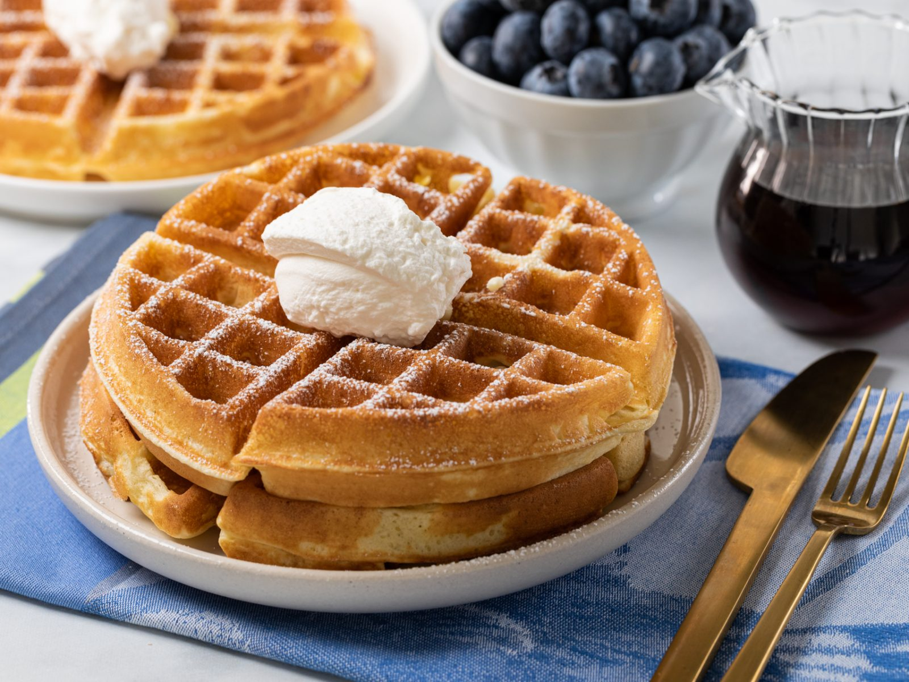

Waffles

Description
Waffles are always better when made with cake flour. A little bit crispy on the outside and soft on the inside, with deep pockets for soaking up butter and syrup, these basic waffles are easy to make for breakfast, brunch, or anytime.
Ingredients
- 2 1/4 cups sifted
- 3 tablespoons granulated sugar
- 1 tablespoon baking powder
- 1/2 teaspoon salt
- 3 eggs, yolks and whites separated
- 1 1/2 cup whole milk
- 1/3 cup unsalted butter, melted + extra for brushing the waffle maker, if desired
Steps
- Preheat an electric waffle iron.
- Sift flour, sugar, baking powder and salt together in a bowl. In a second bowl, whisk egg yolks, milk, butter and vanilla.
- Add the flour mixture to the milk mixture and whisk until just combined.
- In another bowl, whisk egg whites until soft peaks form, about 3 minutes.
- Fold egg whites into batter, being careful not to overmix.
- Pour 3/4 cup of the batter onto the grid of the hot waffle iron. Close and cook according to manufacturer instructions or until waffles are light golden brown and slightly crispy on the outside. Repeat with remaining batter.
Serve immediately with toppings of your choice.
Home